V053 图文发布稿（带图版）
标题
Claude Code 代码审查怎么做：看 diff、找风险、补测试
前两段短文案
这条演示 Claude Code 代码审查的一条闭环路线：先看 git diff，再让 Claude Code 找风险，然后只补缺失测试，最后运行测试并复查 diff。
这篇主要解决：只看 Claude Code 的“完成总结”，没有看真实 diff。看完你能：按一个清晰顺序理解本条视频的核心操作路线。建议先收藏，操作时对照配图一步步核对。
备用标题
别只看 AI 总结，Claude Code 改完代码先这样审查 Claude Code 实战课：代码审查、风险列表和测试验证
完整正文备用
这条演示 Claude Code 代码审查的一条闭环路线：先看 git diff，再让 Claude Code 找风险，然后只补缺失测试，最后运行测试并复查 diff。重点不是让 AI 打分，而是把风险变成可验证的测试和检查清单。
这篇适合刚开始接触积木代码助手、Codex 或 Claude Code 的同学。不要只盯着一个按钮或一条命令，建议按图里的顺序看：先看当前问题，再看操作路径，最后确认结果有没有真正跑通。
常见卡点： 只看 Claude Code 的“完成总结”，没有看真实 diff 看到了 diff，但不知道该问哪些风险 AI 建议很多，但没有落到测试或验证命令 审查时容易把 .env、Git 远程、PR 链接、内部风险直接录进去
看完这篇，你应该能做到： 按一个清晰顺序理解本条视频的核心操作路线 知道关键页面、终端输出或配置位置应该看哪里 知道哪些信息发布前需要脱敏，哪些内容需要以录屏现场为准
我的建议是，第一次操作时不要一边改很多地方，一边猜原因。先把页面、终端输出、配置文件、日志记录这几块分开看，哪一步不一致，就从那一步往回查。
如果你也在配置或使用 AI 编程工具，可以先收藏这篇。后面遇到类似问题时，按这条路线重新核对一遍，通常能更快判断下一步该看哪里。
配图说明
首图用 cover-flow-images/V053-cover-douyin.png。 第二张用 cover-flow-images/V053-flow.png。 后面从 ppt-images/slide-01.png 到 ppt-images/slide-08.png 里选关键步骤图。 如果平台限制图片数量，优先保留：流程图、关键操作、常见错误、结果确认。
配图预览
首图与流程图
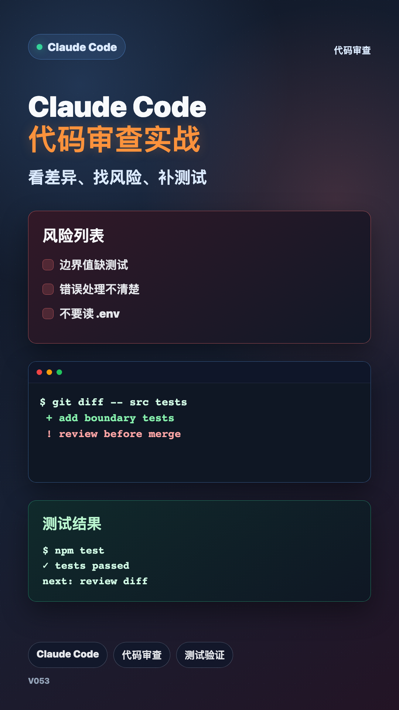
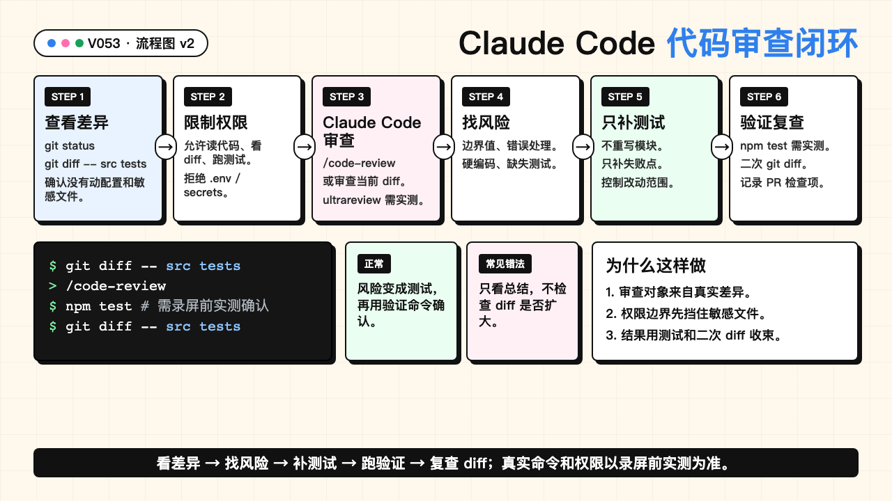
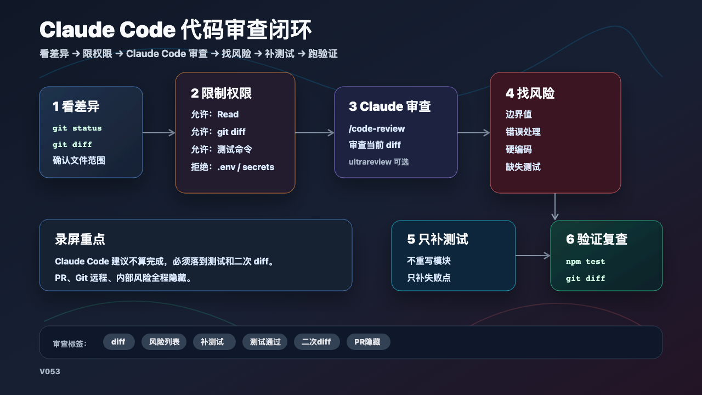
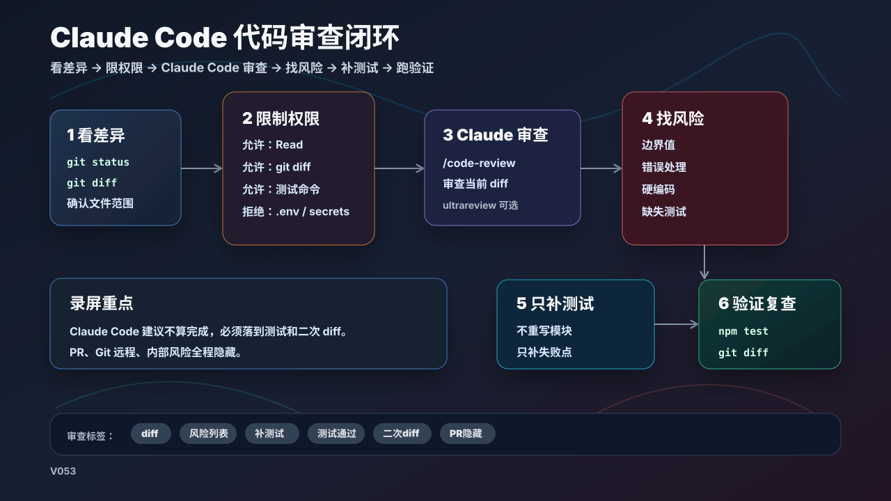
PPT 步骤图
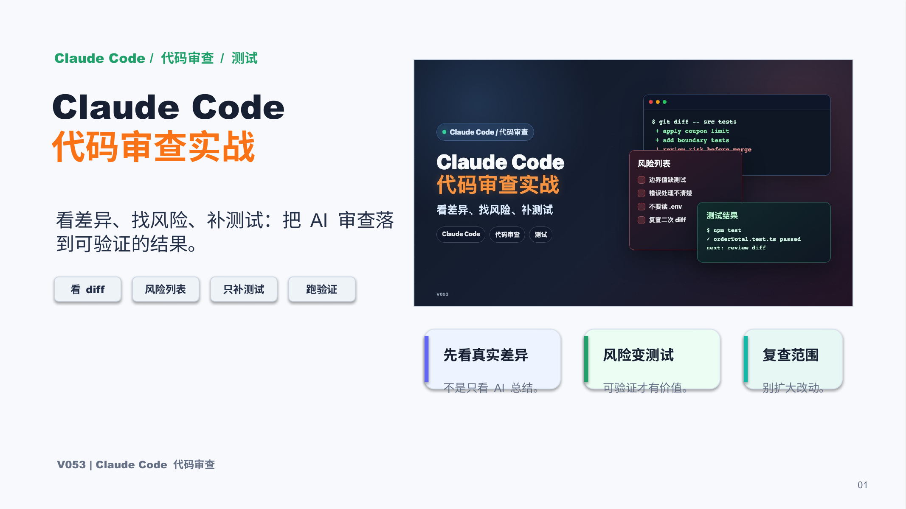
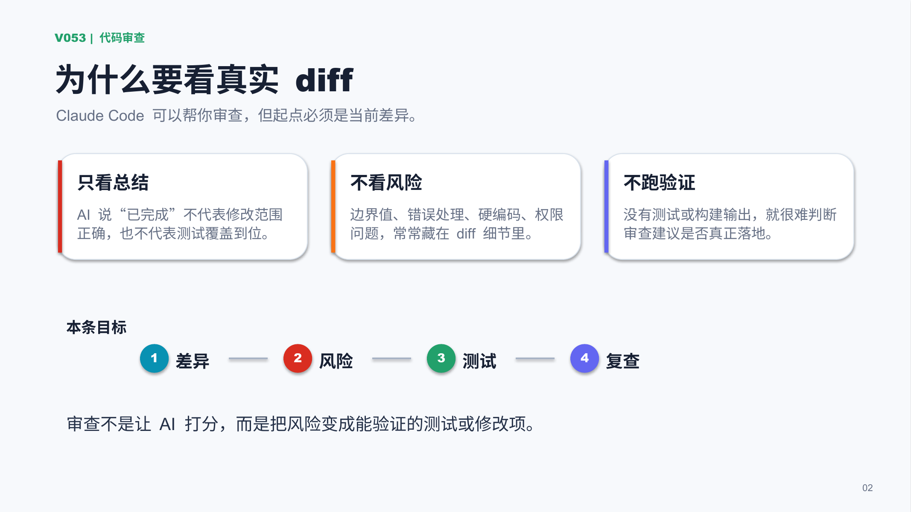
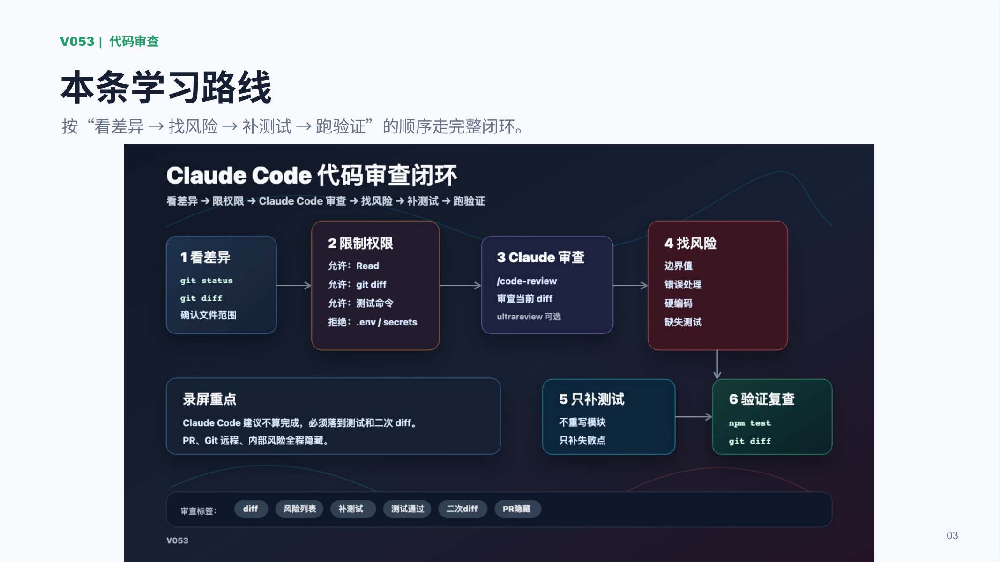
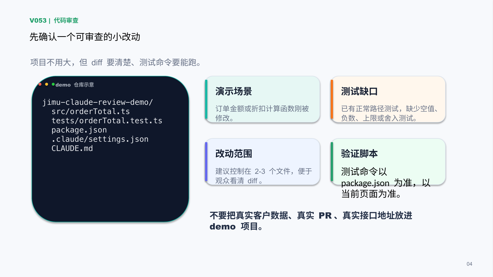
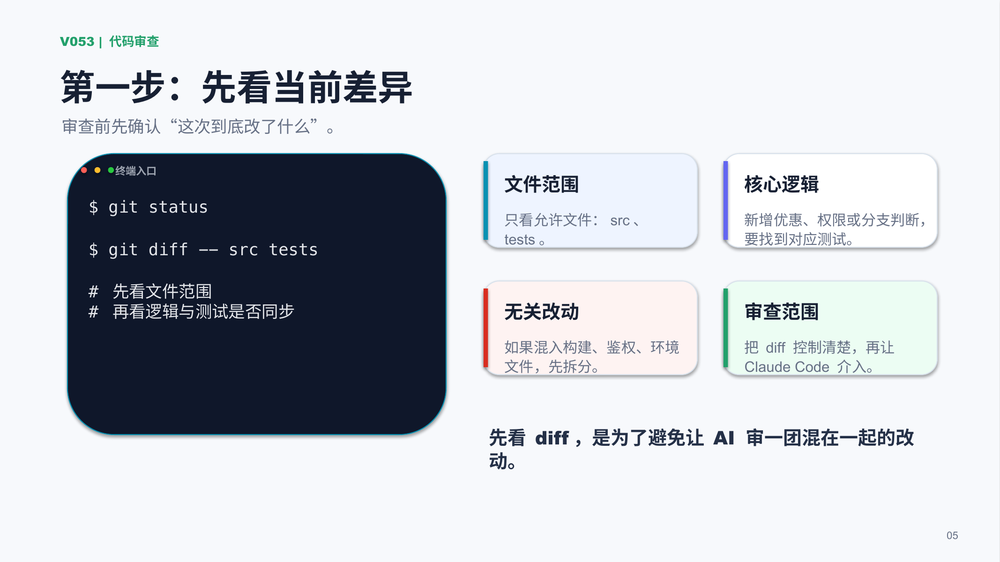
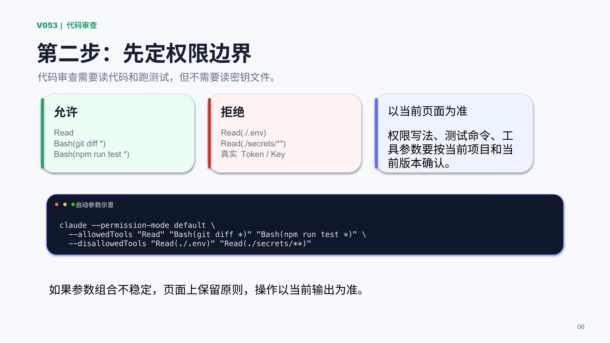
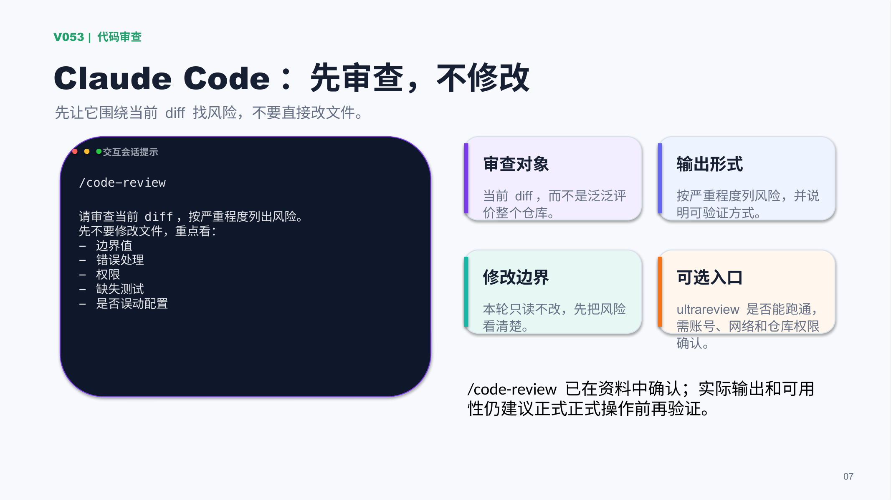
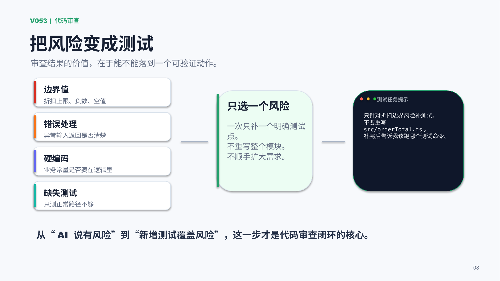
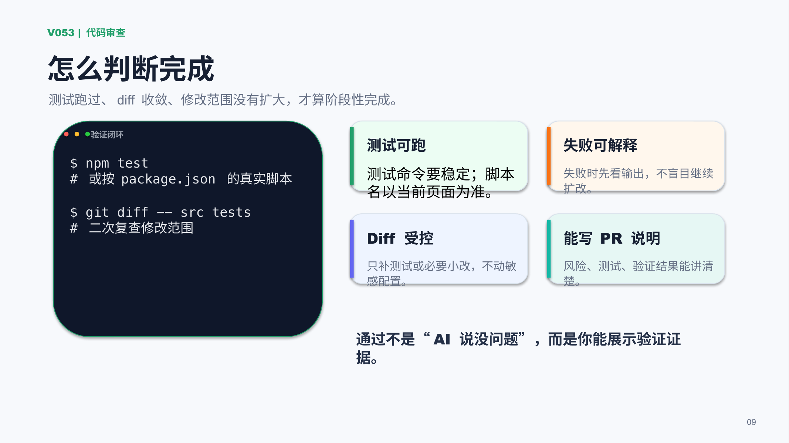
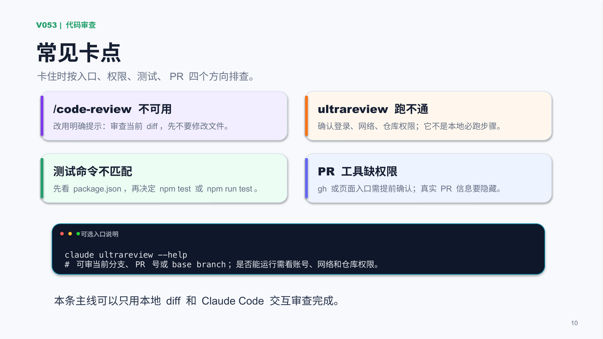
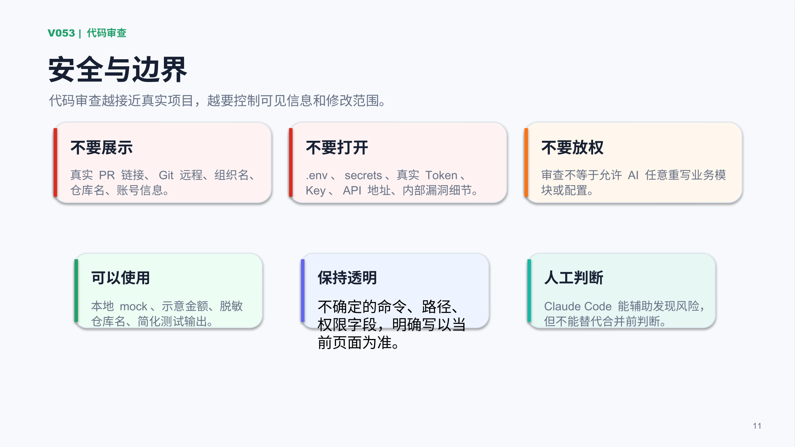
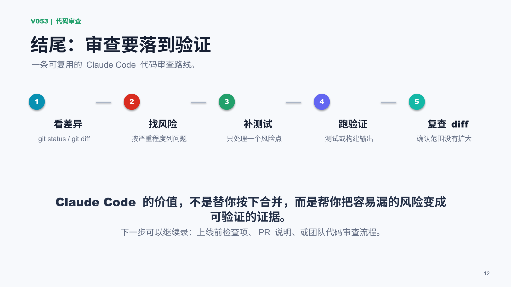
标签
#ClaudeCode #代码审查 #AI编程 #Git #diff #测试验证 #PR #审查